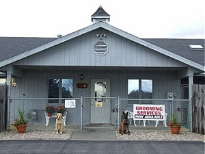
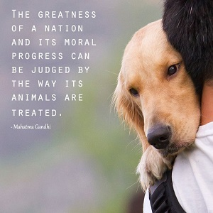

We are a group of members pledged to uphold an anti animal cruelty society.
Why The Animals?

Animals are just like human-beings. They have biological needs and can experience pain, stress and discomfort. Most animals are intelligent and able to feel complex emotions such as joy, happiness, depression as well as distress. Studies have shown that they have family bonds and feel true compassion for each other. But what they can't do is speak for themselves. So humans feel justified in treating them as mere objects. This is the reason why this organisation chose to protect these innocent animals.
By pretending that the animals don't suffer, that they can't feel pain and that they have no real need or desire for freedom, it is easier for people to use them purely as commodities and ignore their sufferings.
Every year, billions of them are either captured, imprisoned, neglected, abused or slaughtered for human ends. They are used for everything from entertainment and sports to consumer product testings and food.
If animals don't have a say in their treatment, then it is up to all caring human beings to give them a voice, speak up on their behalf and end their abuse.
Our History
Animal Cruelty Awareness Initiative was established in year 2013 with the support of 5 volunteers raising funds to set up this organisation, who pledged to uphold an anti animal cruelty society.
Our Objectives/Missions
The objectives of the Society are to prevent cruelty to animals and to promote kindness to animals.
Vision
A compassionate Singapore where all animals are treated with kindness and respect.
Mission
To promote kindness and prevent cruelty to animals through education, advocacy and action.
Ambition
To be the leading authority and advocate of animal welfare and cruelty issues in Singapore.
The Society provides various animal welfare services to the community including:
- A 24-hour emergency service for sick, injured and young animals
- Investigation of cruelty complaints
- Public education programme for students and adults
- Sterilisation voucher programme for community animals (strays)
- A clinic for basic treatment of community animals
- Adoption programme
- A service for lost and found pets
- Advocacy of the humane treatment of animals
- Running an animal shelter and supporting quarantines for unwanted, abused and abandoned animals